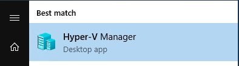
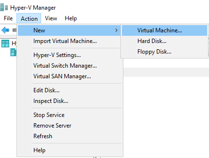
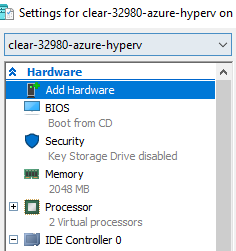

Clear Linux* OS on Microsoft Hyper-V*¶
This page explains how to run a Clear Linux* OS VM on a Microsoft* Hyper-V* hypervisor.
Overview¶
Hyper-V is a type 1 bare-metal hypervisor that runs directly on system hardware. It is available for Windows* server and client operating systems, including Windows 10.
Clear Linux OS provides a virtual disk image for Hyper-V, which also includes a Hyper-V specific kernel and drivers.
Prerequisites¶
Enable virtualization on the host system from EFI/BIOS, such as:
Intel® Virtualization Technology (Intel® VT)
Intel® Virtualization Technology for Directed I/O (Intel® VT-d)
Install Hyper-V on the appropriate Windows operating system:
Configure the appropriate virtual networking in Hyper-V:
Download the Clear Linux OS disk image for Hyper-V¶
Download the
clear-[VERSION]-azure-hyperv.vhd.gzfor Microsoft* Hyper-V from the downloads website.Verify and extract the image using these instructions: Download, verify, and decompress a Clear Linux* OS image.
Extract the compressed file using software such as the 7-Zip* tool or the WinZip* tool.
After extraction, the file should be named
clear-[VERSION]-azure-hyperv.vhd.
Create and configure new VM¶
Open the Hyper-V Manager from the Start menu.
 Figure 1: Hyper-V Manager from the Start menu¶
Note
You may need to manually enable Hyper-V on a Windows* machine. Review
Windows Features.Create a New Virtual Machine by clicking the Action menu, then selecting New and Virtual Machine….
 Figure 2: New Virtual Machine in Hyper-V Manager¶
Follow the New Virtual Machine Wizard to create a new virtual machine specifying the options below:
Name: Choose name (for example, ClearLinuxOS-VM)
Specify Generation: Generation 1
Startup memory: 2048 MB or more
Configure Networking: Change Connection to Default Switch
Connect Virtual Hard Disk: Select Use an existing virtual hard disk and browse to find the
clear-[VERSION]-azure-hyperv.vhdfile.
After finishing the wizard, the VM will be created but not powered on.
Configure the VM by right-clicking it in the Hyper-V Manager and selecting Settings…. Figure 3 shows the Settings page after configuration selections.
Optional
If you wish to Encrypt state and virtual machine traffic, under :guilabel:`Security, select Add Key Storage Drive.
Under Processor, consider increasing the number of virtual processors assigned to the Clear Linux OS VM to improve performance.
 Figure 3: Clear Linux OS VM Settings page after configuration¶
Click Apply at the bottom of the VM Settings screen.
Click OK at the bottom of the VM Settings screen.
Start the VM¶
Start the Clear Linux OS VM by right-clicking the VM in Hyper-V Manager and selecting Start.
Connect to the VM console by right-clicking the VM in Hyper-V Manager and selecting Connect…. A new Virtual Machine Connection window is displayed.
After Clear Linux OS is booted, log in to the console with user root. You are prompted to set a new password immediately.
> User: root
Clear Linux* OS on Microsoft Hyper-V* is ready for use.

{kind=link}
{kind=link}
{kind=link}